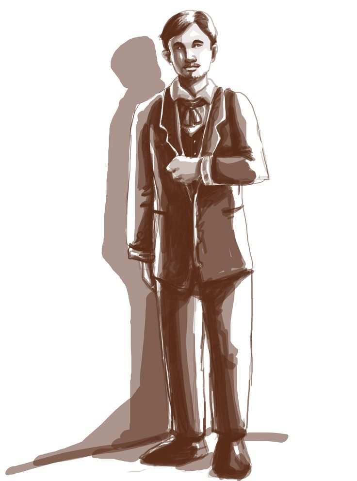
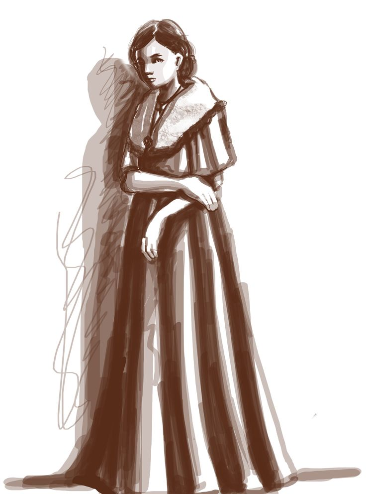
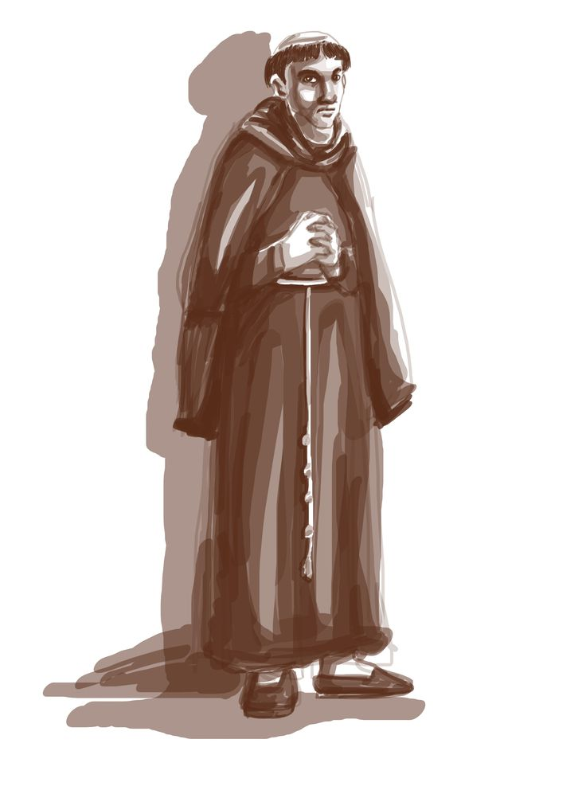
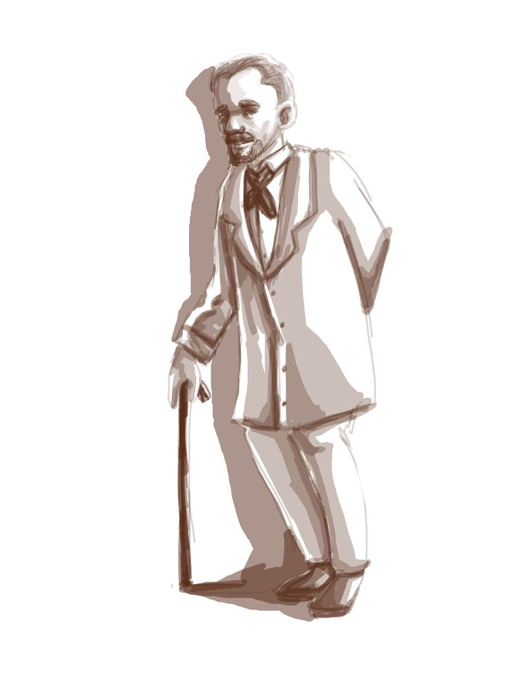
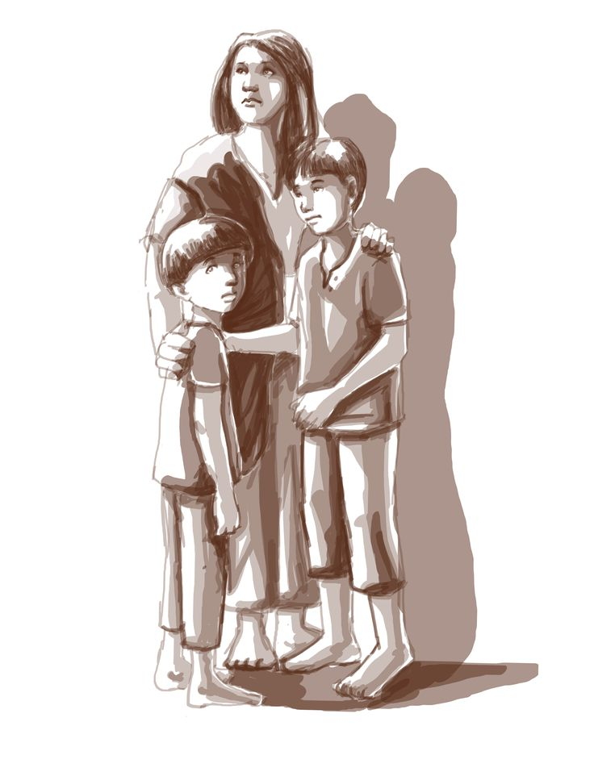
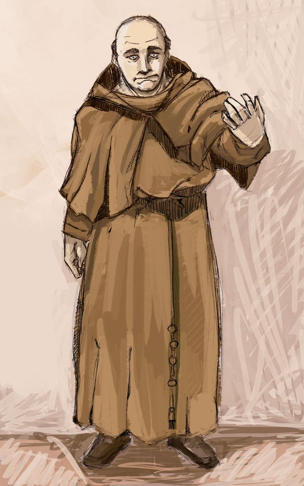
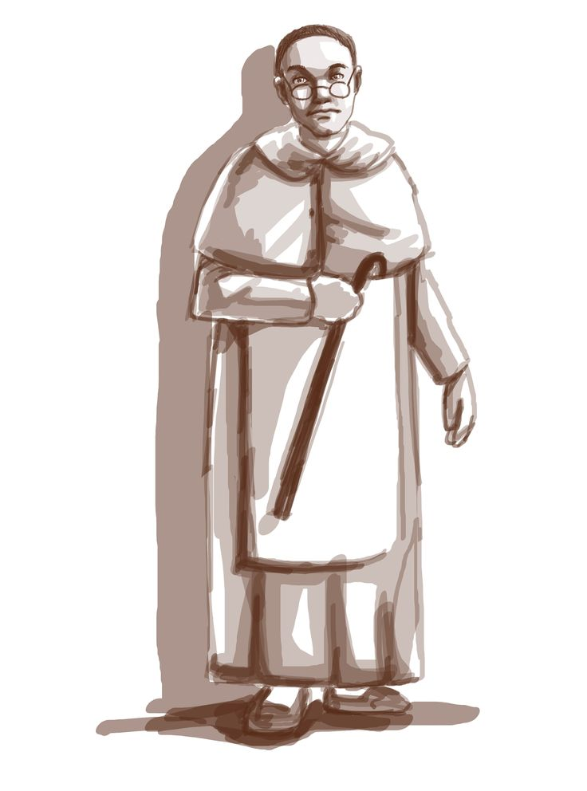
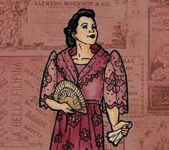

| CHARACTERS IN NOLI ME TANGERE |
|  |
Juan Crisóstomo Ibarra y Magsalin |
- The primary protagonist of the literary work is Crisostomo Ibarra.
- He is a youthful and well-informed Filipino who has returned to the Philippines after completing their studies in Europe.
- He hails from a wealthy and influential family, with his father being Don Rafael.
- He is currently engaged to Maria Clara, who happens to be the daughter of Kapitan Tiago.
|
|  |
Maria Clara |
- Maria Clara serves as the love interest for Crisostomo Ibarra, the main character in the story.
- She is the daughter of Kapitan Tiago, a wealthy Filipino who organizes social gatherings.
- Maria Clara encounters significant challenges in managing and adapting to the traditional roles of gender and societal expectations imposed upon her within her environment of colonial culture.
|
|  |
Padre Damaso |
- He is shown as the main antagonist in Noli Me Tangere.
- In the story, Padre Damaso shows an example of using power to assert authority and exert command over Filipino people.
- Padre Damaso serves as a representation of the Catholic Church's involvement in the submission of the Filipino people throughout the colonial period.
- Padre Damaso, a Spanish priest, had a significant role in the Philippines during the era of Spanish colonialism.
- He was responsible for spreading false information regarding the father of Crisostomo, Don Rafael.
|
 |
Don Santíago de los Santos |
- Kapitan Tiago is a wealthy person of Filipino descent.
- He is recognized for his role in hosting social gatherings and events at his house.
- He is in favor of a marriage between Crisostomo and Maria Clara.
- He maintains a strong relationship with the Spanish friars and usually communicates with them.
- The role of Kapitan Tiago serves as a symbol, representing those who acted as part of the Spanish as they are seen as higher or more powerful than Filipinos.
|
|  |
Don Anastacio (Pilosopo Tasyo) |
- In Jose Rizal's novel "Noli Me Tangere," the character Pilosopo Tacio is shown as a person with intellectual ability.
- He is known for his critique of individuals who completely follow the principles of the Friars.
- He spends his money on the purchase of books since he possesses a fondness for reading and employs this hobby as he lives alone.
- He is often referred to as Pilosopo due to his intellectual knowledge and cleverness.
- He often criticizes the Spanish colonial system and isn't easily fooled.
|
|  |
Narcisa (Sisa) |
- Sisa is the mother of Basilio and Crispin.
- Sisa has been subjected to abuse done by both the Civil Authorities and her husband, Pedro.
- She is depicted as an impoverished vulnerable woman who faces challenges in meeting her financial obligations.
- She serves as a symbol for the challenges faced by women within the context of colonial society, wherein they frequently experienced the weight of subordination and inequality.
|
|  |
Bernardo Salvi |
- Padre Salvi, a Spanish friar, is an antagonist in Noli Me Tangere.
- There exists a deep fascination with Maria Clara, the love interest of Crisostomo Ibarra.
- He is the symbolic embodiment of the instances of power and authority abuse by the Catholic Church in the colonial period.
|
|  |
Hernando Sibyla |
- Padre Sibyla is a Spanish friar who abuses his power for his greediness.
- The only reason he talks to Crisostomo is to get Crisostomo's power to influence things in society.
- Symbolically, he represents the oppressive practices of the Spanish colonial government and the Catholic Church at the time.
|
|
Crispin |
- A young Filipino boy named Crispin.
- He is the sibling of Basilio and the son of Sisa.
- He works in the church, alongside his sibling.
- Crispin endures torture and abuse at the hands of the sacristan mayor of the church, as he is falsely accused of stealing money.
- Crispin serves as an example of the enduring difficulties experienced by the Filipino populace, namely the younger generation, throughout the era of Spanish colonial rule.
|
|  |
Donya Consolacion |
- Donya Consolacion is the wife of the Alperes.
- The woman is experiencing abuse and mistreatment at the hands of her husband.
- Donya Consolacion represents the traits of an enemy, supporting the degradation of the vulnerable in the Spanish colonial system.
|
|
Basilio |
- Older brother of Crispin.
- Worked at the church and heard Crispin screaming in agony while he was being tortured.
- Basilio runs to their house the night Crispin gets taken away, and was shot while in the run and decided to look for Crispin the next day.
- Planned on working harder and having a better future for his family.
- Basilio is a victim of the injustices and hopelessness that were caused by the Spanish colonial period.
|